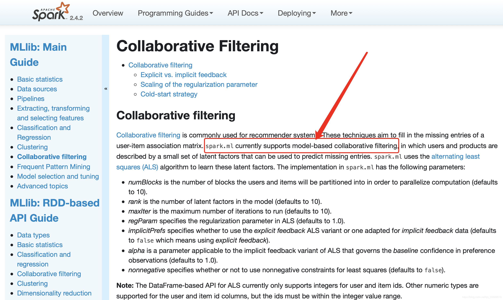
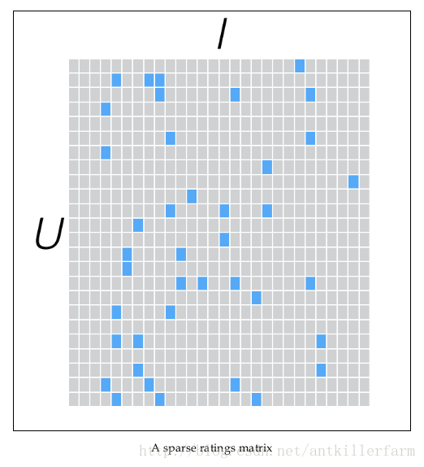
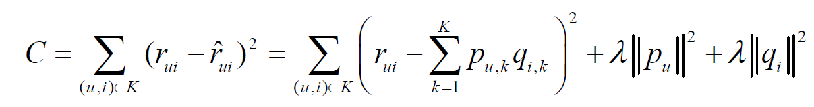
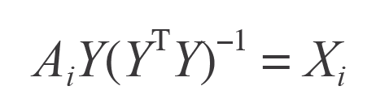
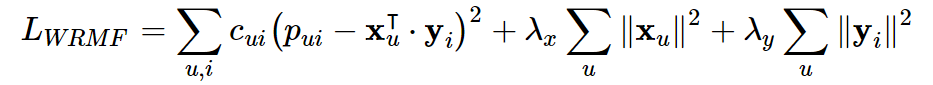
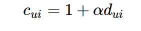

前言
Spark平台推出至今已经地带到2.4.x版本，很多地方都有了重要的更新，加入了很多新的东西。
但是在协同过滤这一块却一直以来都只有ALS一种算法。
同样是大规模计算平台，Hadoop中的机器学习算法库Mahout就集成了多种推荐算法，不但有user-cf和item-cf这种经典算法，还有KNN、SVD，Slope one这些，可谓随意挑选，简繁由君。
ALS算法是2008年以来，用的比较多的协同过滤算法。它已经集成到Spark的Mllib库中，使用起来比较方便。
ALS算法
算法介绍
ALS的意思是交替最小二乘法（Alternating Least Squares），它只是一种优化算法的名字，被用在求解spark中所提供的推荐系统模型的最优解。spark中协同过滤的文档中一开始就说了。

从协同过滤的分类来说，ALS算法属于User-Item CF，也叫做混合CF。它同时考虑了User和Item两个方面。
用户和商品的关系，可以抽象为如下的三元组：<User,Item,Rating>。其中，Rating是用户对商品的评分，表征用户对该商品的喜好程度。
这是一个基于模型的协同过滤（model-based CF），其实它是一种近几年推荐系统界大火的隐语义模型中的一种。它的基本思想是对稀疏矩阵进行模型分解，评估出缺失项的值，以此来得到一个基本的训练模型。然后依照此模型可以针对新的用户和物品数据进行评估。ALS是采用交替的最小二乘法来算出缺失项的。交替的最小二乘法是在最小二乘法的基础上发展而来的。
隐语义模型又叫潜在因素模型，它试图通过数量相对少的未被观察到的底层原因，来解释大量用户和产品之间可观察到的交互。
原理
SVD
基于模型的协同过滤算法操作起来就是通过降维的方法来补全用户-物品矩阵，对矩阵中没有出现的值进行估计。基于这种思想的早期推荐系统常用的一种方法是SVD（奇异值分解）。
该方法在矩阵分解之前需要先把评分矩阵R缺失值补全，补全之后稀疏矩阵R表示成稠密矩阵R’，然后将R’分解成如下形式：
R’ = UTSV
然后再选取U中的K列和V中的S行作为隐特征的个数，达到降维的目的。K的选取通常用启发式策略。
这种方法有两个缺点
- 补全成稠密矩阵之后需要耗费巨大的存储空间，在实际中，用户对物品的行为信息何止千万，对这样的稠密矩阵的存储是不现实的。
- SVD的计算复杂度很高，更不用说这样的大规模稠密矩阵了。所以关于SVD的研究很多都是在小数据集上进行的。
ALS
隐语义模型也是基于矩阵分解的，但是和SVD不同，它是把原始矩阵分解成两个矩阵相乘而不是三个。
假设我们有一批用户数据，其中包含m个User和n个Item，则我们定义Rating矩阵，其中的元素表示第u个User对第i个Item的评分。
在实际使用中，由于n和m的数量都十分巨大，因此R矩阵的规模很容易就会突破1亿项。这时候，传统的矩阵分解方法对于这么大的数据量已经是很难处理了。
另一方面，一个用户也不可能给所有商品评分，因此，R矩阵注定是个稀疏矩阵。矩阵中所缺失的评分，又叫做missing item。

针对这样的特点，我们可以假设用户和商品之间存在若干关联维度（比如用户年龄、性别、受教育程度和商品的外观、价格等），我们只需要将R矩阵投射到这些维度上即可。这个投射的数学表示是：
Rm×n=Um×k×Vk×n
这里的表明这个投射只是一个近似的空间变换。
不懂这个空间变换的同学，可参见《机器学习（十二）》中的“奇异值分解”的内容，或是本节中的“主成分分析”的内容。
现在的问题就变成了确定U和V ，我们把
U叫做用户因子矩阵
V叫做物品因子矩阵
一般情况下，k的值远小于n和m的值，从而达到了数据降维的目的。
幸运的是，我们并不需要显式的定义这些关联维度，而只需要假定它们存在即可，因此这里的关联维度又被称为Latent factor。k的典型取值一般是20～200。
这种方法被称为概率矩阵分解算法(probabilistic matrix factorization，PMF)。ALS算法是PMF在数值计算方面的应用。
通常上式不能达到精确相等的程度，我们要做的就是要最小化他们之间的差距，从而又变成了一个最优化问题。
求解最优化问题我们很容易就想到了随机梯度下降，其中有一种方法就是这样，通过优化如下损失函数来找到X和Y中合适的参数：

其中puk就是U矩阵中u行k列的参数，度量了用户u和第k个隐类的关系；qik是V矩阵中i行k列的参数，度量了物品i和第k个隐类的关系。这种方式也是一种很流行的方法，有很多对它的相关扩展，比如加上偏置项的LFM。
然而ALS用的是另一种求解方法，它先用随机初始化的方式固定一个矩阵，例如Y

然后通过最小化等式两边差的平方来更新另一个矩阵X。
得到X之后，又可以固定X用相同的方法求Y，如此交替进行，直到最后收敛或者达到用户指定的迭代次数为止，是为“交替”是也。
因为这个迭代过程，交替优化X和Y，因此又被称作交替最小二乘算法（Alternating Least Squares，ALS）。
从上式可以看出，X的第i行是A的第i行和Y的函数，因此可以很容易地分开计算X的每一行，这就为并行计算提供了很大的便捷，也正是如此，Spark这种面向大规模计算的平台选择了这个算法。
在Intro to Implicit Matrix Factorization: Classic ALS with Sketchfab Models中，作者用了embarrassingly parallel来形容这个算法，意思是高度易并行化的——它的每个子任务之间没有什么依赖关系。
在现实中，不可能每个用户都和所有的物品都有行为关系，事实上，有交互关系的用户-物品对只占很小的一部分，换句话说，用户-物品关系列表是非常稀疏的。
和SVD这种矩阵分解不同，ALS所用的矩阵分解技术在分解之前不用把系数矩阵填充成稠密矩阵之后再分解，这不但大大减少了存储空间，而且spark可以利用这种稀疏性用简单的线性代数计算求解。
这几点使得本算法在大规模数据上计算非常快，解释了为什么spark mllib目前只有ALS一种推荐算法。
ALS算法的缺点
- 它是一个离线算法。
- 无法准确评估新加入的用户或商品。这个问题也被称为
Cold Start问题。
显性反馈和隐性反馈
基于矩阵分解的协同过滤的标准方法将用户项矩阵中的条目视为由用户给予该项的明确偏好，例如，给予电影评级的用户。
在许多真实世界的用例中，通常只能访问隐式反馈（例如查看，点击，购买，喜欢，共享等）。
隐式反馈：
用户给商品评分是个非常简单粗暴的用户行为。在实际的电商网站中，还有大量的用户行为，同样能够间接反映用户的喜好，比如用户的购买记录、搜索关键字，甚至是鼠标的移动。我们将这些间接用户行为称之为隐式反馈（implicit feedback），以区别于评分这样的显式反馈（explicit feedback）。
隐式反馈有以下几个特点：
1.没有负面反馈（negative feedback）。用户一般会直接忽略不喜欢的商品，而不是给予负面评价。
2.隐式反馈包含大量噪声。比如，电视机在某一时间播放某一节目，然而用户已经睡着了，或者忘了换台。
3.显式反馈表现的是用户的喜好（preference），而隐式反馈表现的是用户的信任（confidence）。比如用户最喜欢的一般是电影，但观看时间最长的却是连续剧。大米购买的比较频繁，量也大，但未必是用户最想吃的食物。
4.隐式反馈非常难以量化。
用于spark.ml处理这些数据的方法取自隐式反馈数据集的协作过滤。
本质上，这种方法不是直接对收视率矩阵进行建模，而是将数据视为代表实力的数字观察用户操作（例如点击次数或某人观看电影的累计持续时间）。然后，这些数字与观察到的用户偏好的信心水平相关，而不是给予项目的明确评分。该模型然后试图找出可用于预测用户对物品的预期偏好的潜在因素。
在推荐系统中用户和物品的交互数据分为显性反馈和隐性反馈数据。
在ALS中这两种情况也是被考虑了进来的，分别可以训练如下两种模型：
显性反馈模型
val model1 = ALS.train(ratings, rank, numIterations, lambda)
隐性反馈模型
val model2 = ALS.trainImplicit(ratings, rank, numIterations, lambda, alpha)
参数
numBlocks是为了并行化计算而将用户和项目划分到的块的数量（默认为10）。
rank是模型中潜在因素的数量（默认为10）。
maxIter是要运行的最大迭代次数（默认为10）。
regParam指定ALS中的正则化参数（默认为1.0）。
implicitPrefs指定是使用显式反馈 ALS变体还是使用 隐式反馈数据（默认为false使用显式反馈的手段）。
alpha是一个适用于ALS的隐式反馈变量的参数，该变量管理偏好观察值的 基线置信度（默认值为1.0)
nonnegative指定是否对最小二乘使用非负约束（默认为false）。
注意： ALS的基于DataFrame的API目前仅支持用户和项目ID的整数。用户和项目ID列支持其他数字类型，但ID必须在整数值范围内。
从上面可以看到，隐式模型多了一个置信参数，这就涉及到ALS中对于隐式反馈模型的处理方式了——有的文章称为“加权的正则化矩阵分解”，它的损失函数如下：

我们知道，在隐反馈模型中是没有评分的，所以在式子中rui被pui所取代，pui是偏好的表示，仅仅表示用户和物品之间有没有交互，而不表示评分高低或者喜好程度。比如用户和物品之间有交互就让pui等于1，没有就等于0。函数中还有一个cui的项，它用来表示用户偏爱某个商品的置信程度，比如交互次数多的权重就会增加。如果我们用dui来表示交互次数的话，那么就可以把置信程度表示成如下公式：
